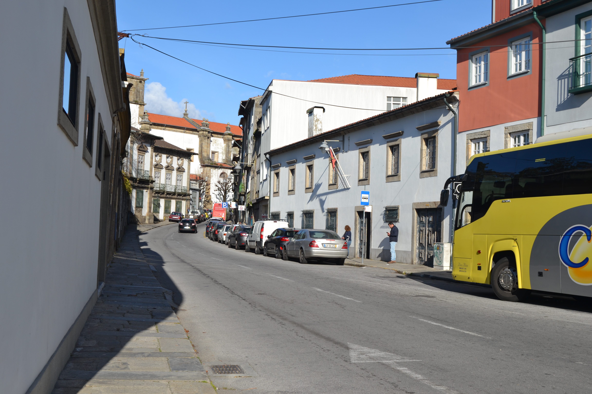
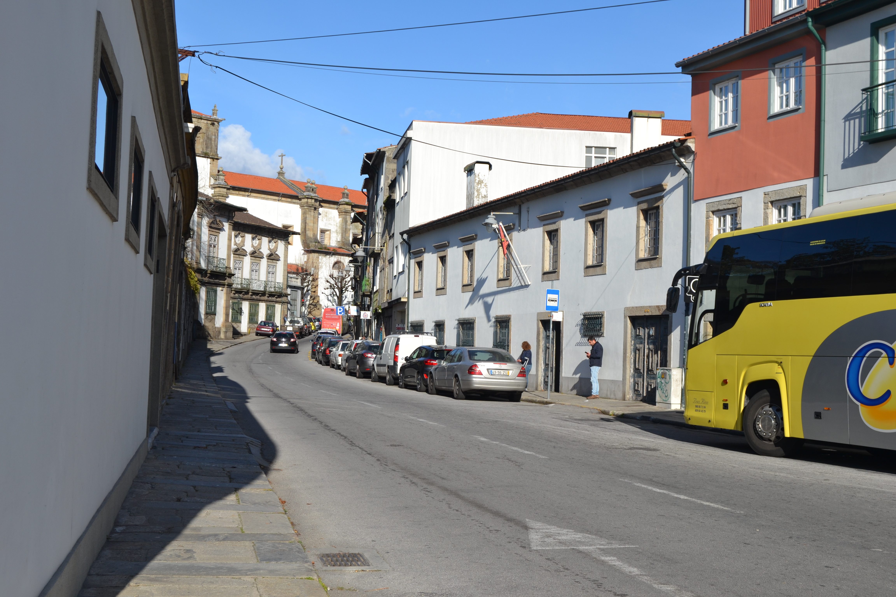

Legenda: Rua Dos Biscaínhos - norte.
Número: 59
Legenda: Rua Dos Biscaínhos - norte.
Aberta no séc. XVI no tempo de D.Diogo de Sousa, unia o campo da Vinha com o campo das Hortas.
Em finais do séc.XVI, tinha já muitos edifícios conforme nos mostra o mapa de Braunio.
No Mappa, contudo, estão apenas desenhados três edifícios do lado Norte: dois de três pisos e o palácio dos Biscaínhos .
Se as casas são simples e de arquitetura tradicional, o palácio é o magnífico edifício que, felizmente, ainda hoje se mantém intacto.
Curiosamente, no Mappa, não há indicações de que qualquer um destes edifícios foram foreiros ao Cabido. No volume 4 dos Índices dos Prazos do Cabido (p.441 e 442) há, porém, notícia de duas destas casas serem emprazadas.
Mantém a designação de rua dos Biscaínhos.
Número: 1
Enfiteuta: Sebastião de Faria Gusmão, enfiteuta principal da Quinta da Cónega.
Descrição: Os herdeiros do Lic. Domingos Correia de Abreu pagam 150 reis e 2 alqueires e meio de trigo ao enfiteuta do prazo da Quinta da Cónega
Número: 2
Enfiteuta: Sebastião de Faria Gusmão, enfiteuta principal da Quinta da Cónega.
Descrição: Pertence ao nº1 da Rua da Cónega, para onde tem, também, frontaria. A fachada situa-se no Campo da Vinha.
 
